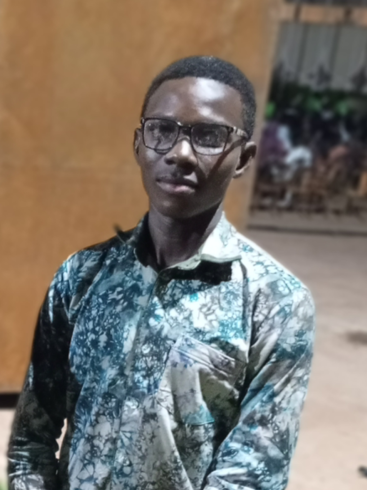

Je me présente
Je suis un passioné de technologies et de robotique et de programmation
J'ai une préférence pour la création de site web en tous genres, le design visuel des sites web et des idées poour l'interactivité des projets et alternatives d'ordre fonctionnels. De manière plus simple "jai des aptitudes pour trouver des solutions plus simples et interractives aux sites" sur lesquels je travaille.
J'ai choisi l'informatique car c'est un domaine en constante evolution, une domaine qui requiert passion imagination et créativité. Un domaine où le meilleur n'est pas forcément le plus ancien ou le plus diplômé mais le plus créatif et travailleur
Je suis actuellement étudiant en informatique plus précisement le génie logiciel. J'ai pour but d'améliorer mes compétences en programmation et en codage. Par la suite je vise à intégrer une école d'ingénierie en informatique et me spécialiser en cybersécurité, en IA et continuer avec la robotique.
J'aime les défis, J'aime également relever les défis "impossibles" justement pour prouver qu'en informmatique "rien n'est impossible" la seule limite est celle de ton imagination